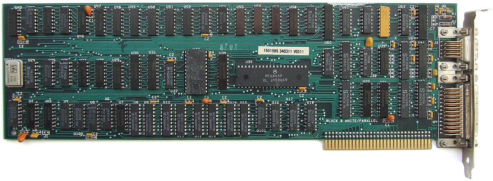
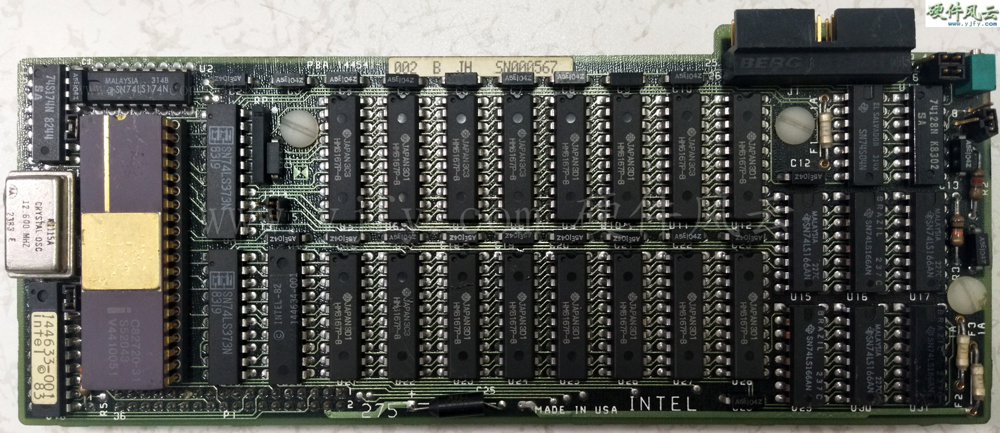

-
1.981
MDA(Monochrome Display Adapter)
Fabricante: IBM.

Arquitectura: Motorola 6845.
Tamaño de memoria: 4kB.
Resolución: 720×350px
Frecuencia horizontal: 18,432kHz.
Frecuencia vertical: 50 Hz.
Cantidad de colores: 1.
Bus: ISA 8bit.
Utilizado en las máquinas de IBM 5150.
Era capaz de mostrar 256 caracteres de 9×14px.
CGA(Color Graphics Adapter)Fabricante: IBM.
Arquitectura: Motorola 6845.
Tamaño de memoria: 16kB.
Resoluciones:
‣Baja: 160×100px (16 colores).
‣Media: 320×200px (8 colores en 3 modos).
‣Alta: 640×200px (2 colores).
Bus: ISA 8bit.
Compatibles con IBM 5153.
Era capaz de mostrar texto y gráficos.
-
1.982
HGC (Hercules Graphics Card)
Fabricante: Hercules Computer Technology, Inc.
Arquitectura: Motorola 6845.
Tamaño de memoria: 64kB.
Tasa de refresco: 50Hz o 60Hz.
Resoluciones:
‣Modo texto: 720x348px.
‣Modo gráfico: 720×348px.
Bus: ISA 8bit.
Para el modo gráfico se necesitaba de una extension "HBASIC" para pc y una mejora en la bios llamada "GRAPH X".
Era capaz de mostrar texto y gráficos.
-
1.983
iSBX 275 VGC
Fabricante: Intel.

GDC: Intel 82720.
Tamaño de memoria: 32kB.
Tasa de refresco: 50Hz o 60Hz.
Resoluciones:
‣Baja: 256 x 256px (8 colores).
‣Alta: 512×512px (Monocromático).
Bus: iSBX.
Fabricado para la Intel iSBC@ 286/10A.
Era capaz de mostrar texto y gráficos. -
1.984
PGC(Professional Graphics Controller)
Fabricante: IBM.
Arquitectura: Intel 8088.
Tamaño de memoria RAM: 320kB.
Resolución: 640×480px (256 colores de 4096).
Tasa de refresco: 60Hz
Bus: ISA 8bit.
Consiste en tres circuitos conectados uno arriba del otro y conectados en dos slots en el IBM PC XT.
Diseñado para operaciones gráficas vectoriales 2D y 3D en monitores IBM 5175.
EGA (Enhanced Graphics Adapter)Fabricante: IBM.
Arquitectura: Motorola 6845.
Tamaño de memoria: 64kB(Expanible).
Tasa de refresco: 60Hz.
Resoluciones:
‣Máxima: 640x350px (16 colores de 64).
‣Mínima: 320×200px (16 colores).
Bus: ISA 8bit.
Compatible con las IBM 5154.